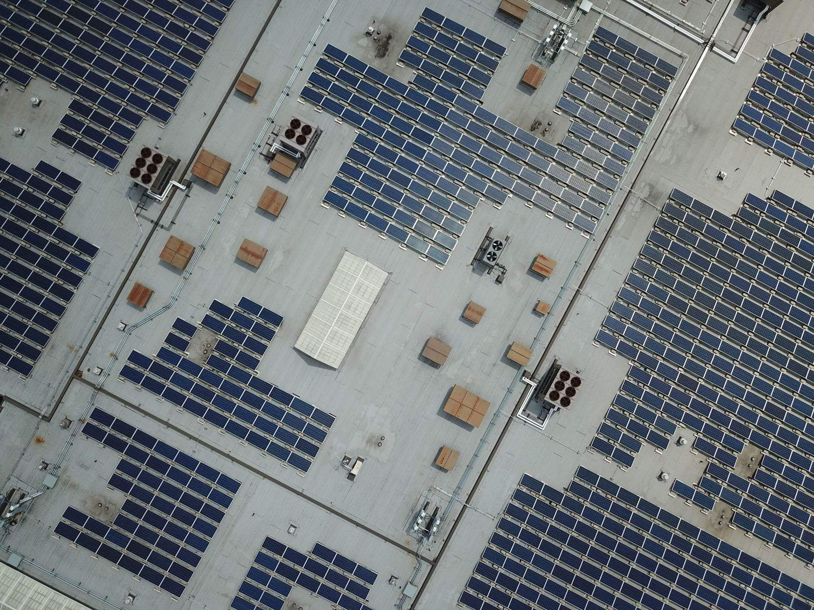

The practice
Fourteen years of roofs, now from the desk side.
James Hartley spent his first eight years in solar on roofs — installing, then commissioning, then being sent back to the systems that weren't performing. The pattern in the call-backs was never the panels. It was the sizing: arrays specified from a postcode and a sales target, justified on annual averages, that left their owners importing most of their electricity through the exact months the brochure had averaged away.
Since 2016 the practice has done one thing: the design work, independently. No installation arm, no preferred installer, no commission from any supplier — because a designer who profits from bigger systems will, eventually, design bigger systems. The fee is for the sheet. The sheet has to be right in December.

METHOD
How a design proceeds
Five steps, in this order. Skipping the first is how the industry got its reputation.
01
Usage data first
A year of bills at minimum; half-hourly smart-meter data if you have it. The design is fitted to when you actually use electricity — a retired couple and a night-shift household with identical roofs need different systems.
02
Roof survey & shading, stated honestly
Planes, pitches, obstructions and the shading that actually bites — a chimney shadow in December costs more than its size suggests, because December sun is low. Shading losses are printed on the sheet as a number, never absorbed into a vague "system losses" line.
03
The December test
The proposed array's worst month is set against your worst-month load. If the design only works as an annual average, it is sent back and resized — usually down, occasionally split across roof planes to widen the generating day.
04
The yield sheet, assumptions in the open
Month-by-month expected generation for your postcode and roof, with every assumption printed: irradiation source, orientation and shading factors, tariffs used in any payback figure, degradation. If a number on the sheet can't be traced to an assumption, it doesn't go on the sheet.
05
A handover pack any installer can price
Specification, string plan and the yield sheet, written so three installers can quote against the same design and you can compare like with like. The pack is yours; who you hand it to is your business.
STORAGE
Battery honesty
A battery moves electricity by hours. It cannot move June into December, and any sheet that implies otherwise is selling you something.
Storage earns its place when…
- Your load is evening-heavy and your array is idle-rich at midday — there is a real daily surplus to shift.
- Your tariff rewards it: a wide gap between import and export prices, or a time-of-use rate with a genuine peak.
- It is sized to the winter surplus, not the summer one — a battery sized for June stands empty, expensively, all winter.
- Backup power during cuts is worth money to you in itself, priced as resilience rather than disguised as savings.
Storage is jewellery when…
- The case for it is built on summer surplus — the months when you least need stored electricity.
- Your daytime usage already absorbs most of what you generate; there is little left to store.
- The payback quote assumes today's export tariff, today's import tariff and no degradation, forever.
- It is being sold as the fix for a badly sized array. Resize the array first; it is cheaper.
GRID
Grid & export, without the gloss
Your connection belongs to your distribution network operator, and it comes with an export limit. Small domestic systems usually connect under a notify-after-install route; larger arrays — and most three-phase or commercial work — need approval before installation, and the limit granted can be lower than the array's peak. A competent design states the assumed export limit on the sheet and sizes the inverter strategy around it, rather than discovering the limit at commissioning.
Export is paid under the Smart Export Guarantee and similar tariffs, at rates that vary by supplier and change over time. The yield sheet therefore treats export income as the junior partner in every payback figure: savings from electricity you use yourself are valued at the import price you actually avoid paying, and export is shown as a separate, clearly labelled line — so you can see at a glance how much of a quoted payback depends on a tariff nobody controls.
TERMS
Engagement terms
How engagements run
- Fixed fees, quoted in writing before work starts, from the published fee card. No hourly meter running on design work.
- Independence — no commissions, referral fees or supplier margins, from anyone, ever. If an installer offers one, it is declined and the client is told.
- Your documents — the yield sheet, specification and any review report are yours, to share with any installer or keep.
- Straight answers — if the data says solar doesn't stack up on your roof, the deliverable is a short letter saying so, charged at the assessment fee, not a design.
Availability
- Design packs: booking 3 weeks out (November 2026).
- Yield assessments & reviews: booking 2 weeks out.
- One commercial feasibility slot remains for January.
- Site visits across Yorkshire, the North and the Midlands; assessments are desk-based anywhere in the UK.
Start with the data, not the quote.
A postcode and a year of bills is enough for a first straight answer.
Start an enquiry